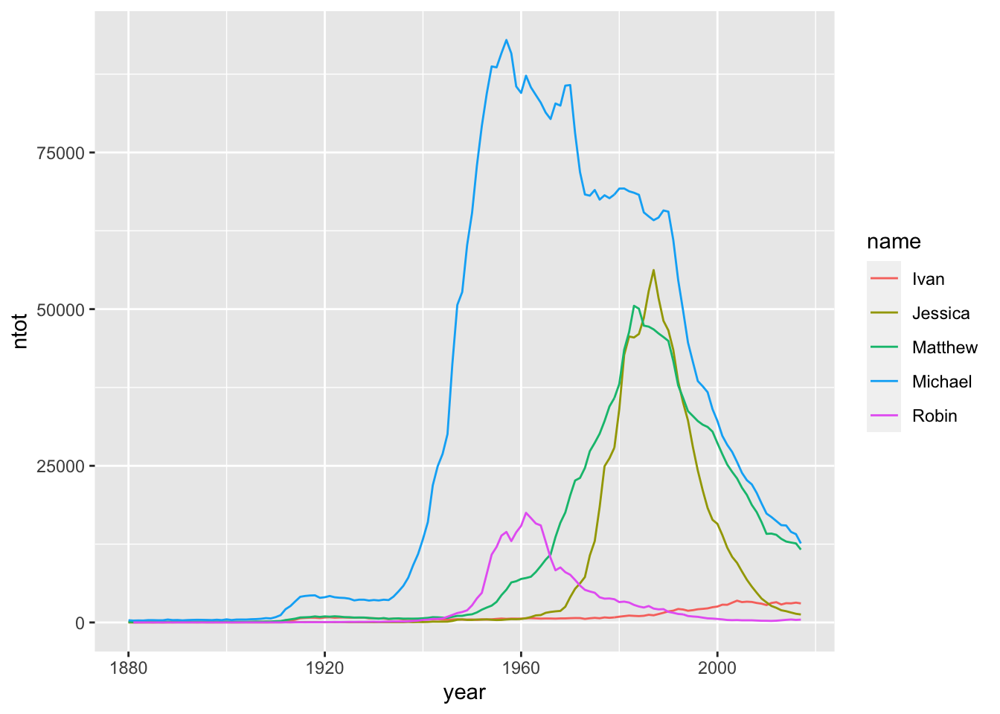

4 Wrangling with dplyr
Goals:
Use the
mutate(),if_else(), andcase_when()functions to create new variables.Use the
filter(),select(), andarrange()functions indplyrto choose certain rows to keep or get rid of, choose certain columns to keep or get rid of, and to sort the data, respectively.Use
group_by()andsummarise()to create useful summaries of a data set.Combine the above goals with plotting to explore the
babynamesdata set and a data set on SLU majors.
Throughout this chapter, we will use the babynames data set in the babynames R package. To begin, read about the data set, by running
library(babynames)and then typing ?babynames in your bottom-left window of R Studio. We see that this data set contains baby name data provided by the SSA in the United States dating back to 1880:
head(babynames)## # A tibble: 6 x 5
## year sex name n prop
## <dbl> <chr> <chr> <int> <dbl>
## 1 1880 F Mary 7065 0.0724
## 2 1880 F Anna 2604 0.0267
## 3 1880 F Emma 2003 0.0205
## 4 1880 F Elizabeth 1939 0.0199
## 5 1880 F Minnie 1746 0.0179
## 6 1880 F Margaret 1578 0.0162The second data set that we will use has 27 observations, one for each of SLU’s majors and contains 3 variables:
Major, the name of the major.nfemales, the number of female graduates in that major from 2015 - 2019.nmales, the number of male graduates in that major from 2015 - 2019.
The data has kindly been provided by Dr. Ramler. With your Notes R Project open, you can read in the data set with
library(tidyverse)
slumajors_df <- read_csv("data/SLU_Majors_15_19.csv")
slumajors_df## # A tibble: 27 x 3
## Major nfemales nmales
## <chr> <dbl> <dbl>
## 1 Anthropology 34 15
## 2 Art & Art History 65 11
## 3 Biochemistry 14 11
## 4 Biology 162 67
## 5 Business in the Liberal Arts 135 251
## 6 Chemistry 26 14
## 7 Computer Science 21 47
## 8 Conservation Biology 38 20
## 9 Economics 128 349
## 10 English 131 54
## # … with 17 more rowsThere are many interesting and informative plots that we could make with either data set, but most require some data wrangling first. This chapter will provide the foundation for such wrangling skills.
4.1 mutate(): Create Variables
Sometimes, we will want to create a new variable that’s not in the data set, oftentimes using if_else(), case_when(), or basic algebraic operations on one or more of the columns already present in the data set.
R understands the following symbols:
+for addition,-for subtraction*for multiplication,/for division^for raising something to a power (3 ^ 2is equal to9)
R also does the same order of operations as usual: parentheses, then exponents, then multiplication and division, then addition and subtraction.
For example, suppose that we want to create a variable in slumajors_df that has the total number of students graduating in each major. We can do this with mutate():
slumajors_df %>% mutate(ntotal = nfemales + nmales)## # A tibble: 27 x 4
## Major nfemales nmales ntotal
## <chr> <dbl> <dbl> <dbl>
## 1 Anthropology 34 15 49
## 2 Art & Art History 65 11 76
## 3 Biochemistry 14 11 25
## 4 Biology 162 67 229
## 5 Business in the Liberal Arts 135 251 386
## 6 Chemistry 26 14 40
## 7 Computer Science 21 47 68
## 8 Conservation Biology 38 20 58
## 9 Economics 128 349 477
## 10 English 131 54 185
## # … with 17 more rowsThere’s a lot to break down in that code chunk: most importantly, we’re seeing our first of many, many, many, many, many, many, many instances of using %>% to pipe! The %>% operator approximately reads take slumajors_df “and then” mutate() it.
Piping is a really convenient, easy-to-read way to build a sequence of commands. How you can read the above code is:
Take
slumajors_dfand withslumajors_df,perform a
mutate()step to create the new variable calledntotal, which isnfemalesplusnmales.
Since this is our first time using mutate(), let’s also delve into what the function is doing. In general, mutate() reads:
mutate(name_of_new_variable = operations_on_old_variables).
R just automatically assumes that you want to do the operation for every single row in the data set, which is often quite convenient!
We might also want to create a variable that is the percentage of students identifying as female for each major:
slumajors_df %>%
mutate(percfemale = 100 * nfemales / (nfemales + nmales))## # A tibble: 27 x 4
## Major nfemales nmales percfemale
## <chr> <dbl> <dbl> <dbl>
## 1 Anthropology 34 15 69.4
## 2 Art & Art History 65 11 85.5
## 3 Biochemistry 14 11 56
## 4 Biology 162 67 70.7
## 5 Business in the Liberal Arts 135 251 35.0
## 6 Chemistry 26 14 65
## 7 Computer Science 21 47 30.9
## 8 Conservation Biology 38 20 65.5
## 9 Economics 128 349 26.8
## 10 English 131 54 70.8
## # … with 17 more rowsBut what happened to ntotal? Is it still in the printout? It’s not: when we created the variable ntotal, we didn’t actually save the new data set as anything. So R makes and prints the new variable, but it doesn’t get saved to any data set. If we want to save the new data set, then we can use the <- operator. Here, we’re saving the new data set with the same name as the old data set: slumajors_df. Then, we’re doing the same thing for the percfemale variable. We won’t always want to give the new data set the same name as the old one: we’ll talk about this more in the chapter exercises.
slumajors_df <- slumajors_df %>%
mutate(percfemale = 100 * nfemales / (nfemales + nmales))slumajors_df <- slumajors_df %>% mutate(ntotal = nfemales + nmales)But, you can pipe as many things together as you want to, so it’s probably easier to just create both variables in one go. The following chunk says to “Take slumajors_df and create a new variable ntotal. With that new data set, create a new variable called percfemale.” Finally, the slumajors_df <- at the beginning says to “save this new data set as a data set with the same name, slumajors_df.”
slumajors_df <- slumajors_df %>%
mutate(ntotal = nfemales + nmales) %>%
mutate(percfemale = 100 * nfemales / (nfemales + nmales))4.1.1 A Little More on Piping
We are jumping straight into using piping, but we do want to have an appreciation on how terrible life would be without it. What piping does is make whatever is given before the %>% pipe the first argument of whatever function follows the %>%. So
df %>% mutate(x = y + 4)is equivalent to
mutate(df, x = y + 4)Piping really isn’t that useful if you just have something that can be done with a single %>%. But, doing our previous example without piping might look like:
mutate(mutate(slumajors_df, ntotal = nfemales + nmales), percfemale = 100 * nfemales / (nfemales + nmales))## # A tibble: 27 x 5
## Major nfemales nmales percfemale ntotal
## <chr> <dbl> <dbl> <dbl> <dbl>
## 1 Anthropology 34 15 69.4 49
## 2 Art & Art History 65 11 85.5 76
## 3 Biochemistry 14 11 56 25
## 4 Biology 162 67 70.7 229
## 5 Business in the Liberal Arts 135 251 35.0 386
## 6 Chemistry 26 14 65 40
## 7 Computer Science 21 47 30.9 68
## 8 Conservation Biology 38 20 65.5 58
## 9 Economics 128 349 26.8 477
## 10 English 131 54 70.8 185
## # … with 17 more rowsIt’s still not that bad here because we aren’t doing that many operations to the data set, but it’s already much harder to read. But we will get to examples where you are using 5+ pipes.
It might also help to use an analogy when thinking about piping. Consider the Ke$ha’s morning routine in the opening of the song Tik Tok. If we were to write her morning routine in terms of piping,
kesha %>% wake_up(time = "morning", feels_like = "P-Diddy") %>%
grab(glasses) %>%
brush(teeth, item = "jack", unit = "bottle") %>% ....Kesha first wakes up in the morning, and then the Kesha that has woken up grabs her glasses, and then the Kesha who has woken up and has her glasses brushes her teeth, etc.
4.1.2 if_else() and case_when()
Suppose that you want to make a new variable that is conditional on another variable (or more than one variable) in the data set. Then we would typically use mutate() coupled with
if_else()if your new variable is created on only one conditioncase_when()if your new variable is created on more than one condition
Suppose we want to create a new variable that tells us whether or not the Major has a majority of Women. That is, we want this new variable, morewomen to be "Yes" if the Major has more than 50% women and "No" if it has 50% or less.
slumajors_df %>% mutate(morewomen = if_else(percfemale > 50,
true = "Yes",
false = "No"))## # A tibble: 27 x 6
## Major nfemales nmales percfemale ntotal morewomen
## <chr> <dbl> <dbl> <dbl> <dbl> <chr>
## 1 Anthropology 34 15 69.4 49 Yes
## 2 Art & Art History 65 11 85.5 76 Yes
## 3 Biochemistry 14 11 56 25 Yes
## 4 Biology 162 67 70.7 229 Yes
## 5 Business in the Liberal Arts 135 251 35.0 386 No
## 6 Chemistry 26 14 65 40 Yes
## 7 Computer Science 21 47 30.9 68 No
## 8 Conservation Biology 38 20 65.5 58 Yes
## 9 Economics 128 349 26.8 477 No
## 10 English 131 54 70.8 185 Yes
## # … with 17 more rowsThe mutate() statement reads: create a new variable called morewomen that is equal to "Yes" if percfemale > 50 is true and is equal to "No" if perfemale is not > 0.5. The first argument is the condition, the second is what to name the new variable when the condition holds, and the third is what to name the variable if the condition does not hold.
We use conditions all of the time in every day life. For example, New York had a quarantine order stating that people coming from 22 states in July 2020 would need to quarantine. In terms of a condition, this would read “if you are traveling to New York from one of the 22 states, then you need to quarantine for 2 weeks. Else, if not, then you don’t need to quarantine.” The trick in using these conditions in R is getting used to the syntax of the code.
We can see from the above set up that if we had more than one condition, then we’d need to use a different function (or use nested if_else() statements, which can be a nightmare to read). If we have more than one condition for creating the new variable, we will use case_when().
For example, when looking at the output, we see that Biochemistry has 56% female graduates. That’s “about” a 50/50 split, so suppose we want a variable called large_majority that is “female” when the percent women is 70 or more, “male” when the percent women is 30 or less, and “none” when the percent female is between 30 and 70.
slumajors_df %>% mutate(large_majority =
case_when(percfemale >= 70 ~ "female",
percfemale <= 30 ~ "male",
percfemale > 30 & percfemale < 70 ~ "none")) ## # A tibble: 27 x 6
## Major nfemales nmales percfemale ntotal large_majority
## <chr> <dbl> <dbl> <dbl> <dbl> <chr>
## 1 Anthropology 34 15 69.4 49 none
## 2 Art & Art History 65 11 85.5 76 female
## 3 Biochemistry 14 11 56 25 none
## 4 Biology 162 67 70.7 229 female
## 5 Business in the Liberal Arts 135 251 35.0 386 none
## 6 Chemistry 26 14 65 40 none
## 7 Computer Science 21 47 30.9 68 none
## 8 Conservation Biology 38 20 65.5 58 none
## 9 Economics 128 349 26.8 477 male
## 10 English 131 54 70.8 185 female
## # … with 17 more rowsThe case_when() function reads “When the percent female is more than or equal to 70, assign the new variable large_majority the value of”female“, when it’s less or equal to 30, assign the more than 30 and less than 70, assign the variable the value of”none" ." The & is a boolean operator: we’ll talk more about that later so don’t worry too much about that for now.
Let’s save these two new variables to the slumajors_df:
slumajors_df <- slumajors_df %>%
mutate(morewomen = if_else(percfemale > 50,
true = "Yes",
false = "No")) %>%
mutate(large_majority =
case_when(percfemale >= 70 ~ "female",
percfemale <= 30 ~ "male",
percfemale > 30 & percfemale < 70 ~ "none")) 4.1.3 Exercises
Exercises marked with an * indicate that the exercise has a solution at the end of the chapter at 4.6.
Do you think it is ethical to exclude non-binary genders from analyses and graphs in the slumajors data set? Why or why not?
* Create a new variable that is called
major_sizeand is “large” when the total number of majors is 100 or more and “small” when the total number of majors is less than 100.Create a new variable that is called
major_size2and is “large when the total number of majors is 150 or more,”medium" when the total number of majors is between 41 and 149, and “small” when the total number of majors is 40 or fewer.About 55% of SLU students identify as female. So, in the definition of the
morewomenvariable, does it make more sense to use 55% as the cutoff or 50%?* Investigate what happens with
case_when()when you give overlapping conditions and when you give conditions that don’t cover all observations. For overlapping conditions, create a variabletestcasethat is"Yes"whenpercfemaleis greater than or equal to 40 and"No"whenpercfemaleis greater than 60 For conditions that don’t cover all observations, create a variabletestcase2that is"Yes"whenpercefemaleis greater than or equal to 55 and"No"whenpercfemaleis less than 35.With one or two of the newly created variables from
mutate(), create a plot that investigates a question of interest you might have about the data.
4.2 arrange(), select(), and slice(), and filter()
arrange() is used to order rows in the data set according to some variable, select() is used to choose columns to keep (or get rid of) and filter() is used to keep (or get rid of) only some of the observations (rows).
4.2.1 arrange(): Ordering Rows
The arrange() function allows us to order rows in the data set using one or more variables. The function is very straightforward. Suppose that we want to order the rows so that the majors with the lowest percfemale are first:
slumajors_df %>% arrange(percfemale)## # A tibble: 27 x 7
## Major nfemales nmales percfemale ntotal morewomen large_majority
## <chr> <dbl> <dbl> <dbl> <dbl> <chr> <chr>
## 1 Economics 128 349 26.8 477 No male
## 2 Physics 6 14 30 20 No male
## 3 Computer Science 21 47 30.9 68 No none
## 4 Business in the L… 135 251 35.0 386 No none
## 5 Music 13 21 38.2 34 No none
## 6 Geology 28 41 40.6 69 No none
## 7 History 62 82 43.1 144 No none
## 8 Philosophy 24 29 45.3 53 No none
## 9 Mathematics 74 83 47.1 157 No none
## 10 Government 127 116 52.3 243 Yes none
## # … with 17 more rowsWhich major has the lowest percentage of female graduates?
We see that, by default, arrange() orders the rows from low to high. To order from high to low so that the majors with the highest percfemale are first, use desc() around the variable that you are ordering by:
slumajors_df %>% arrange(desc(percfemale))## # A tibble: 27 x 7
## Major nfemales nmales percfemale ntotal morewomen large_majority
## <chr> <dbl> <dbl> <dbl> <dbl> <chr> <chr>
## 1 Art & Art History 65 11 85.5 76 Yes female
## 2 Psychology 278 61 82.0 339 Yes female
## 3 French 27 7 79.4 34 Yes female
## 4 Spanish 35 10 77.8 45 Yes female
## 5 Statistics 28 9 75.7 37 Yes female
## 6 Global Studies 69 27 71.9 96 Yes female
## 7 Neuroscience 61 24 71.8 85 Yes female
## 8 Performance & Com… 144 57 71.6 201 Yes female
## 9 Religious Studies 10 4 71.4 14 Yes female
## 10 English 131 54 70.8 185 Yes female
## # … with 17 more rowsWhat is the major with the highest percentage of women graduates?
4.2.2 select() Choose Columns
We might also be interested in getting rid of some of the columns in a data set. One reason to do this is if there are an overwhelming (30+) columns in a data set, but we know that we just need a few of them. The easiest way to use select() is to just input the names of the columns that you want to keep. For example, if we were only interested in majors and their totals, we could do
slumajors_df %>% select(Major, ntotal)## # A tibble: 27 x 2
## Major ntotal
## <chr> <dbl>
## 1 Anthropology 49
## 2 Art & Art History 76
## 3 Biochemistry 25
## 4 Biology 229
## 5 Business in the Liberal Arts 386
## 6 Chemistry 40
## 7 Computer Science 68
## 8 Conservation Biology 58
## 9 Economics 477
## 10 English 185
## # … with 17 more rowsIf I wanted to use this data set for anything else, I’d also need to name, or rename, it with <-. We would probably want to name it something other than slumajors_df so as to not overwrite the original data set, in case we want to use those other variables again later!
We might also want to use select() to get rid of one or two columns. If this is the case, we denote any column you want to get rid of with -. For example, we might want to get rid of the ntotal column that we made and get rid of the nmales and nfemales columns:
slumajors_df %>% select(-ntotal, -nfemales, -nmales)## # A tibble: 27 x 4
## Major percfemale morewomen large_majority
## <chr> <dbl> <chr> <chr>
## 1 Anthropology 69.4 Yes none
## 2 Art & Art History 85.5 Yes female
## 3 Biochemistry 56 Yes none
## 4 Biology 70.7 Yes female
## 5 Business in the Liberal Arts 35.0 No none
## 6 Chemistry 65 Yes none
## 7 Computer Science 30.9 No none
## 8 Conservation Biology 65.5 Yes none
## 9 Economics 26.8 No male
## 10 English 70.8 Yes female
## # … with 17 more rowsselect() comes with many useful helper functions, but these are oftentimes not needed. One of the helper functions that is actually often useful is everything(). We can, for example, use this after using mutate() to put the variable that was just created at the front of the data set to make sure there weren’t any unexpected issues:
slumajors_df %>% mutate(propfemale = percfemale / 100) %>%
select(propfemale, everything())## # A tibble: 27 x 8
## propfemale Major nfemales nmales percfemale ntotal morewomen large_majority
## <dbl> <chr> <dbl> <dbl> <dbl> <dbl> <chr> <chr>
## 1 0.694 Anthro… 34 15 69.4 49 Yes none
## 2 0.855 Art & … 65 11 85.5 76 Yes female
## 3 0.56 Bioche… 14 11 56 25 Yes none
## 4 0.707 Biology 162 67 70.7 229 Yes female
## 5 0.350 Busine… 135 251 35.0 386 No none
## 6 0.65 Chemis… 26 14 65 40 Yes none
## 7 0.309 Comput… 21 47 30.9 68 No none
## 8 0.655 Conser… 38 20 65.5 58 Yes none
## 9 0.268 Econom… 128 349 26.8 477 No male
## 10 0.708 English 131 54 70.8 185 Yes female
## # … with 17 more rowsVerify that propfemale now appears first in the data set. everything() tacks on all of the remaining variables after propfemale. So, in this case, it’s a useful way to re-order the columns so that what you might be most interested in appears first.
4.2.3 slice() and filter(): Choose Rows
Instead of choosing which columns to keep, we can also choose certain rows to keep using either slice() or filter().
slice() allows you to specify the row numbers corresponding to rows that you want to keep. For example, suppose that we only want to keep the rows with the five most popular majors:
slumajors_df %>% arrange(desc(ntotal)) %>%
slice(1, 2, 3, 4, 5)## # A tibble: 5 x 7
## Major nfemales nmales percfemale ntotal morewomen large_majority
## <chr> <dbl> <dbl> <dbl> <dbl> <chr> <chr>
## 1 Economics 128 349 26.8 477 No male
## 2 Business in the Li… 135 251 35.0 386 No none
## 3 Psychology 278 61 82.0 339 Yes female
## 4 Government 127 116 52.3 243 Yes none
## 5 Biology 162 67 70.7 229 Yes femaleWe can alternatively use slice(1:5), which is shorthand for slice(1, 2, 3, 4, 5). While slice() is useful, it is relatively simple. We’ll come back to it again in a few weeks as well when we discuss subsetting in base R.
filter() is a way to keep rows by specifying a condition related to one or more of the variables in the data set. We’ve already seen conditions in if_else() and case_when() statements, but they’ll now be used to “filter” the rows in our data set.
We can keep rows based on a categorical variable or a quantitative variable or a combination of any number of categorical and quantitative variables. R uses the following symbols to make comparisons. We’ve already been using the more intuitive symbols (like < and >):
<and<=for less than and less than or equal to, respectively>and>=for greater than and greater than or equal to, respectively==for equal to (careful: equal to is a double equal sign==)!=for not equal to (in general,!denotes “not”)
It’s probably time for a change of data set too! We’ll be working with the babynames data set for the rest of this chapter:
library(babynames)
babynames## # A tibble: 1,924,665 x 5
## year sex name n prop
## <dbl> <chr> <chr> <int> <dbl>
## 1 1880 F Mary 7065 0.0724
## 2 1880 F Anna 2604 0.0267
## 3 1880 F Emma 2003 0.0205
## 4 1880 F Elizabeth 1939 0.0199
## 5 1880 F Minnie 1746 0.0179
## 6 1880 F Margaret 1578 0.0162
## 7 1880 F Ida 1472 0.0151
## 8 1880 F Alice 1414 0.0145
## 9 1880 F Bertha 1320 0.0135
## 10 1880 F Sarah 1288 0.0132
## # … with 1,924,655 more rowsIf needed, we can remind ourselves what is in the babynames data set by typing ?babynames in the console window.
What do the following statements do? See if you can guess before running the code.
babynames %>% filter(name == "Matthew")
babynames %>% filter(year >= 2000)
babynames %>% filter(sex != "M")
babynames %>% filter(prop > 0.05)
babynames %>% filter(year == max(year))Why are some things put in quotes, like "Matthew" while some things aren’t, like 2000? Can you make out a pattern?
We can also combine conditions on multiple variables in filter() using Boolean operators. We’ve already seen one of these in the case_when() statement above: & means “and.”
Look at the Venn diagrams in R for Data Science to learn about the various Boolean operators you can use in R: https://r4ds.had.co.nz/transform.html#logical-operators. The Boolean operators can be used in other functions in R as well, as we’ve already seen with if_else() and case_when().
The following gives some examples. See if you can figure out what each line of code is doing before running it.
babynames %>% filter(n > 20000 | prop > 0.05)
babynames %>% filter(sex == "F" & name == "Mary")
babynames %>% filter(sex == "F" & name == "Mary" & prop > 0.05)4.2.4 Exercises
Exercises marked with an * indicate that the exercise has a solution at the end of the chapter at 4.6.
What happens when you
arrange()by one of the categorical variables in theslumajors_dfdata set?* Use
select()andeverything()to put thelarge_majorityvariable as the first column in theslumajors_dfdata set.* In the
babynamesdata set, usefilter(),mutate()withrank(), andarrange()to print the 10 most popular Male babynames in 2017.In the
babynamesdata set, usefilter()to keep only the rows with your name (or, another name that interests you) and one sex (either"M"or"F"). Name the new data set something and then construct a line plot that looks at the either thenorpropof your chosen name throughyear.
4.3 summarise() and group_by(): Create Summaries
The summarise() function is useful to get summaries from the data. For example, suppose that we want to know the average major size at SLU across the five year span or the total number of majors across those five years. Then we can use summarise() and a summary function, like mean(), sum(), median(), max(), min(), n(), etc. You’ll notice that the format of summarise() is extremely similar to the format of mutate(). Using the slumajors_df data again just for one quick example,
slumajors_df %>%
summarise(meantotalmajor = mean(ntotal),
totalgrad = sum(ntotal))## # A tibble: 1 x 2
## meantotalmajor totalgrad
## <dbl> <dbl>
## 1 124. 33474.3.1 group_by(): Groups
summarise() is often most useful when paired with a group_by() statement. Doing so allows us to get summaries across different groups.
For example, suppose that you wanted the total number of registered births per year in the babynames data set:
babynames %>% group_by(year) %>%
summarise(totalbirths = sum(n))## # A tibble: 138 x 2
## year totalbirths
## <dbl> <int>
## 1 1880 201484
## 2 1881 192696
## 3 1882 221533
## 4 1883 216946
## 5 1884 243462
## 6 1885 240854
## 7 1886 255317
## 8 1887 247394
## 9 1888 299473
## 10 1889 288946
## # … with 128 more rowsgroup_by() takes a grouping variable, and then, using summarise() computes the given summary function on each group.
Most summary functions are intuitive if you’ve had intro stat. But, if you’re not sure whether the summary for getting the maximum is maximum() or max(), just try both!
The n() function can be used within summarise() to obtain the number of observations. It will give you the total number of rows, if used without group_by()
babynames %>% summarise(totalobs = n())## # A tibble: 1 x 1
## totalobs
## <int>
## 1 1924665Note that n() typically doesn’t have any inputs. It’s typically more useful when paired with group_by(): this allows us to see the number of observations within each year, for instance:
babynames %>% group_by(year) %>%
summarise(ngroup = n())## # A tibble: 138 x 2
## year ngroup
## <dbl> <int>
## 1 1880 2000
## 2 1881 1935
## 3 1882 2127
## 4 1883 2084
## 5 1884 2297
## 6 1885 2294
## 7 1886 2392
## 8 1887 2373
## 9 1888 2651
## 10 1889 2590
## # … with 128 more rows4.3.2 Exercises
Exercises marked with an * indicate that the exercise has a solution at the end of the chapter at 4.6.
- Compare
summarise()withmutate()using the following code. What’s the difference between the two functions?
slumajors_df %>%
summarise(meantotalmajor = mean(ntotal),
totalgrad = sum(ntotal))
slumajors_df %>%
mutate(meantotalmajor = mean(ntotal),
totalgrad = sum(ntotal)) %>%
select(meantotalmajor, totalgrad, everything())- Using the data set from the
group_by()andn()combination,
babynames %>% group_by(year) %>%
summarise(ngroup = n())## # A tibble: 138 x 2
## year ngroup
## <dbl> <int>
## 1 1880 2000
## 2 1881 1935
## 3 1882 2127
## 4 1883 2084
## 5 1884 2297
## 6 1885 2294
## 7 1886 2392
## 8 1887 2373
## 9 1888 2651
## 10 1889 2590
## # … with 128 more rowsmake a line plot with ngroup on the x-axis and year on the y-axis. How would you interpret the plot?
* Create a data set that has a column for
nameand a column that shows the total number of births for that name across all years and both sexes.*
group_by()can also be used with other functions, includingmutate(). Usegroup_by()andmutate()to rank the names from most to least popular in each year-sex combination.* From the data set in 4,
filter()the data to keep only the most popular name in each year-sex combination and then construct a summary table showing how many times each name appears as the most popular name.* Run the following code. Intuitively, a
slice(1, 2, 3, 4, 5)should grab the first five rows of the data set, but, when we try to run that, we get 1380 rows. Try to figure out what the issue is by using Google to search something like “dplyrnot slicing correctly after using group by.” What do you find?
babynames_test <- babynames %>%
group_by(year, sex) %>% mutate(ntest = n / prop)
babynames_test %>% slice(1, 2, 3, 4, 5)## # A tibble: 1,380 x 6
## # Groups: year, sex [276]
## year sex name n prop ntest
## <dbl> <chr> <chr> <int> <dbl> <dbl>
## 1 1880 F Mary 7065 0.0724 97605.
## 2 1880 F Anna 2604 0.0267 97605.
## 3 1880 F Emma 2003 0.0205 97605.
## 4 1880 F Elizabeth 1939 0.0199 97605.
## 5 1880 F Minnie 1746 0.0179 97605.
## 6 1880 M John 9655 0.0815 118400.
## 7 1880 M William 9532 0.0805 118400.
## 8 1880 M James 5927 0.0501 118400.
## 9 1880 M Charles 5348 0.0452 118400.
## 10 1880 M George 5126 0.0433 118400.
## # … with 1,370 more rows4.4 Missing Values
Both of the data sets that we’ve worked with are nice in that they do not have any missing values. We’ll see plenty of examples of data sets with missing values later, so we should examine how the various functions that we’ve talked about so far tackle missing values.
Missing values in R are denoted with NA for “Not Available.” Run the following code to create a toy data set with some missing values so that we can see how the various functions we’ve used so far deal with NA values.
toy_df <- tibble(x = c(NA, 3, 4, 7),
y = c(1, 4, 3, 2),
z = c("A", "A", "B", NA))
toy_df## # A tibble: 4 x 3
## x y z
## <dbl> <dbl> <chr>
## 1 NA 1 A
## 2 3 4 A
## 3 4 3 B
## 4 7 2 <NA>4.4.1 Exercises
Exercises marked with an * indicate that the exercise has a solution at the end of the chapter at 4.6.
*
mutate(). Try to create a new variable withmutate()involvingx. What doesRdo with the missing value?arrange(). Try arranging the data set byx. What doesRdo with the missing value?filter(). Try filtering so that only observations where x is less than 5 are kept. What doesRdo with the missing value?summarise(). Try usingsummarise()with a function involving x. What doesRreturn?group_by()andsummarise(). To your statement in 4, add agroup_by(z)statement before yoursummarise(). What doesRreturn now?
4.4.2 Removing Missing Values
Missing values should not be removed without carefully examination and a note of what the consequences might be (e.g. why are these values missing?). We have a toy data set that is meaningless, so we aren’t asking those questions now, but we will for any data set that does have missing values!
If we have investigated the missing values and are comfortable with removing them, many functions that we would use in summarise() have an na.rm argument that we can set to TRUE to tell summarise() to remove any NAs before taking the mean(), median(), max(), etc.
toy_df %>% summarise(meanx = mean(x, na.rm = TRUE))## # A tibble: 1 x 1
## meanx
## <dbl>
## 1 4.67If we want to remove the missing values more directly, we can use the is.na() function in combination with filter(). If the variable is NA (Not Available) for an observation, is.na() evaluates to TRUE; if not, is.na() evaluates to FALSE. Test this out using mutate() to create a new variable for whether Median is missing:
toy_df %>% mutate(missingx = is.na(x))## # A tibble: 4 x 4
## x y z missingx
## <dbl> <dbl> <chr> <lgl>
## 1 NA 1 A TRUE
## 2 3 4 A FALSE
## 3 4 3 B FALSE
## 4 7 2 <NA> FALSEmissingx is TRUE only for the the first observation. We can use this to our advantage with filter() to filter it out of the data set, without going through the extra step of actually making a new variable missingx:
toy_df %>% filter(is.na(x) != TRUE)## # A tibble: 3 x 3
## x y z
## <dbl> <dbl> <chr>
## 1 3 4 A
## 2 4 3 B
## 3 7 2 <NA>You’ll commonly see this written as short-hand in people’s code you may come across as:
toy_df %>% filter(!is.na(x))## # A tibble: 3 x 3
## x y z
## <dbl> <dbl> <chr>
## 1 3 4 A
## 2 4 3 B
## 3 7 2 <NA>which says to “keep anything that does not have a missing x value” (recall that the ! means “not”).
4.5 Chapter Exercises
We found both in the SLU majors data set and in the FiveThirtyEight majors data set that Statistics has a higher proportion of women than almost all other STEM fields. Read the first two sections of this article. Write 2-3 sentences about the article’s reasoning of why there are more women in statistics than in other STEM fields.
* a. Choose 5 names that interest you and create a new data set that only has data on those 5 names.
Use
group_by()andsummarise()to add together the number of Females and Males for each name in each year. Hint: you cangroup_by()more than one variable!Make a line plot showing the popularity of these 5 names over time.
- Choose a year and a sex that interests you and filter the data set to only contain observations from that year and sex.
Create a new variable that ranks the names from most popular to least popular.
Create a bar plot that shows the 10 most popular names as well as the count for each name.
- * In some cases throughout this chapter, we’ve renamed data sets using
<-with the same name like
toy_df <- toy_df %>% mutate(newvar = x / y)In other cases, we’ve given the data set a new name, like
toy_small <- toy_df %>% filter(!is.na(x))For which of the functions below is a generally “safe” to name the data set using the same name after using the function. Why?
mutate()arrange()filter()summarise()select()
- Pose a question about the
babynamesdata set and then answer your question with either a graphic or a data summary.
4.6 Exercise Solutions
4.6.1 mutate() S
- * Create a new variable that is called
major_sizeand is “large” when the total number of majors is 100 or more and “small” when the total number of majors is less than 100.
slumajors_df %>% mutate(major_size = if_else(ntotal >= 100,
true = "large",
false = "small"))## # A tibble: 27 x 8
## Major nfemales nmales percfemale ntotal morewomen large_majority major_size
## <chr> <dbl> <dbl> <dbl> <dbl> <chr> <chr> <chr>
## 1 Anthro… 34 15 69.4 49 Yes none small
## 2 Art & … 65 11 85.5 76 Yes female small
## 3 Bioche… 14 11 56 25 Yes none small
## 4 Biology 162 67 70.7 229 Yes female large
## 5 Busine… 135 251 35.0 386 No none large
## 6 Chemis… 26 14 65 40 Yes none small
## 7 Comput… 21 47 30.9 68 No none small
## 8 Conser… 38 20 65.5 58 Yes none small
## 9 Econom… 128 349 26.8 477 No male large
## 10 English 131 54 70.8 185 Yes female large
## # … with 17 more rows## OR
slumajors_df %>%
mutate(major_size = case_when(ntotal >= 100 ~ "large",
ntotal < 100 ~ "small"))## # A tibble: 27 x 8
## Major nfemales nmales percfemale ntotal morewomen large_majority major_size
## <chr> <dbl> <dbl> <dbl> <dbl> <chr> <chr> <chr>
## 1 Anthro… 34 15 69.4 49 Yes none small
## 2 Art & … 65 11 85.5 76 Yes female small
## 3 Bioche… 14 11 56 25 Yes none small
## 4 Biology 162 67 70.7 229 Yes female large
## 5 Busine… 135 251 35.0 386 No none large
## 6 Chemis… 26 14 65 40 Yes none small
## 7 Comput… 21 47 30.9 68 No none small
## 8 Conser… 38 20 65.5 58 Yes none small
## 9 Econom… 128 349 26.8 477 No male large
## 10 English 131 54 70.8 185 Yes female large
## # … with 17 more rows- * Investigate what happens with
case_when()when you give overlapping conditions and when you give conditions that don’t cover all observations. For overlapping conditions, create a variabletestcasethat is"Yes"whenpercfemaleis greater than or equal to 40 and"No"whenpercfemaleis greater than 60 For conditions that don’t cover all observations, create a variabletestcase2that is"Yes"whenpercefemaleis greater than or equal to 55 and"No"whenpercfemaleis less than 35.
## # A tibble: 27 x 9
## Major nfemales nmales percfemale ntotal morewomen large_majority testcase
## <chr> <dbl> <dbl> <dbl> <dbl> <chr> <chr> <chr>
## 1 Anthropo… 34 15 69.4 49 Yes none Yes
## 2 Art & Ar… 65 11 85.5 76 Yes female Yes
## 3 Biochemi… 14 11 56 25 Yes none Yes
## 4 Biology 162 67 70.7 229 Yes female Yes
## 5 Business… 135 251 35.0 386 No none <NA>
## 6 Chemistry 26 14 65 40 Yes none Yes
## 7 Computer… 21 47 30.9 68 No none <NA>
## 8 Conserva… 38 20 65.5 58 Yes none Yes
## 9 Economics 128 349 26.8 477 No male <NA>
## 10 English 131 54 70.8 185 Yes female Yes
## # … with 17 more rows, and 1 more variable: testcase2 <chr>For overlapping cases, case_when prioritizes the first case given.
For non-coverage, any observation that is not covered is given an NA.
4.6.2 arrange(), select(), …. S
- * Use
select()andeverything()to put thelarge_majorityvariable as the first column in theslumajors_dfdata set.
slumajors_df %>% select(large_majority, everything())## # A tibble: 27 x 7
## large_majority Major nfemales nmales percfemale ntotal morewomen
## <chr> <chr> <dbl> <dbl> <dbl> <dbl> <chr>
## 1 none Anthropology 34 15 69.4 49 Yes
## 2 female Art & Art History 65 11 85.5 76 Yes
## 3 none Biochemistry 14 11 56 25 Yes
## 4 female Biology 162 67 70.7 229 Yes
## 5 none Business in the L… 135 251 35.0 386 No
## 6 none Chemistry 26 14 65 40 Yes
## 7 none Computer Science 21 47 30.9 68 No
## 8 none Conservation Biol… 38 20 65.5 58 Yes
## 9 male Economics 128 349 26.8 477 No
## 10 female English 131 54 70.8 185 Yes
## # … with 17 more rows- * In the
babynamesdata set, usefilter(),mutate()withrank(), andarrange()to print the 10 most popular Male babynames in 2017.
babynames %>% filter(sex == "M" & year == 2017) %>%
mutate(rankname = rank(desc(n))) %>%
filter(rankname <= 10)## # A tibble: 10 x 6
## year sex name n prop rankname
## <dbl> <chr> <chr> <int> <dbl> <dbl>
## 1 2017 M Liam 18728 0.00954 1
## 2 2017 M Noah 18326 0.00933 2
## 3 2017 M William 14904 0.00759 3
## 4 2017 M James 14232 0.00725 4
## 5 2017 M Logan 13974 0.00712 5
## 6 2017 M Benjamin 13733 0.00699 6
## 7 2017 M Mason 13502 0.00688 7
## 8 2017 M Elijah 13268 0.00676 8
## 9 2017 M Oliver 13141 0.00669 9
## 10 2017 M Jacob 13106 0.00668 104.6.3 summarise() and group_by() S
- * Create a data set that has a column for
nameand a column that shows the total number of births for that name across all years and both sexes.
babynames %>% group_by(name) %>%
summarise(totalbirths = sum(n))## # A tibble: 97,310 x 2
## name totalbirths
## <chr> <int>
## 1 Aaban 107
## 2 Aabha 35
## 3 Aabid 10
## 4 Aabir 5
## 5 Aabriella 32
## 6 Aada 5
## 7 Aadam 254
## 8 Aadan 130
## 9 Aadarsh 199
## 10 Aaden 4658
## # … with 97,300 more rows- *
group_by()can also be used with other functions, includingmutate(). Usegroup_by()andmutate()to rank the names from most to least popular in each year-sex combination.
ranked_babynames <- babynames %>% group_by(year, sex) %>%
mutate(rankname = rank((desc(n))))- * From the data set in 4,
filter()the data to keep only the most popular name in each year-sex combination and then construct a summary table showing how many times each name appears as the most popular name.
ranked_babynames %>% filter(rankname == 1) %>%
group_by(name) %>%
summarise(nappear = n()) %>%
arrange(desc(nappear))## # A tibble: 18 x 2
## name nappear
## <chr> <int>
## 1 Mary 76
## 2 John 44
## 3 Michael 44
## 4 Robert 17
## 5 Jennifer 15
## 6 Jacob 14
## 7 James 13
## 8 Emily 12
## 9 Jessica 9
## 10 Lisa 8
## 11 Linda 6
## 12 Emma 5
## 13 Noah 4
## 14 Sophia 3
## 15 Ashley 2
## 16 Isabella 2
## 17 David 1
## 18 Liam 1- * Run the following code. Intuitively, a
slice(1, 2, 3, 4, 5)should grab the first five rows of the data set, but, when we try to run that, we get 1380 rows. Try to figure out what the issue is by using Google to search something like “dplyrnot slicing correctly after using group by.” What do you find?
babynames_test <- babynames %>%
group_by(year, sex) %>% mutate(ntest = n / prop)
babynames_test %>% slice(1, 2, 3, 4, 5)## # A tibble: 1,380 x 6
## # Groups: year, sex [276]
## year sex name n prop ntest
## <dbl> <chr> <chr> <int> <dbl> <dbl>
## 1 1880 F Mary 7065 0.0724 97605.
## 2 1880 F Anna 2604 0.0267 97605.
## 3 1880 F Emma 2003 0.0205 97605.
## 4 1880 F Elizabeth 1939 0.0199 97605.
## 5 1880 F Minnie 1746 0.0179 97605.
## 6 1880 M John 9655 0.0815 118400.
## 7 1880 M William 9532 0.0805 118400.
## 8 1880 M James 5927 0.0501 118400.
## 9 1880 M Charles 5348 0.0452 118400.
## 10 1880 M George 5126 0.0433 118400.
## # … with 1,370 more rowsFunctions like slice() and rank() operate on defined groups in the data set if using a function like group_by() first. Sometimes this feature is quite convenient. But, if we no longer want slice() or rank() or other functions to account for these groups, we need to add an ungroup() pipe, which simply drops the groups that we had formed:
babynames_test %>% ungroup() %>% slice(1:5)## # A tibble: 5 x 6
## year sex name n prop ntest
## <dbl> <chr> <chr> <int> <dbl> <dbl>
## 1 1880 F Mary 7065 0.0724 97605.
## 2 1880 F Anna 2604 0.0267 97605.
## 3 1880 F Emma 2003 0.0205 97605.
## 4 1880 F Elizabeth 1939 0.0199 97605.
## 5 1880 F Minnie 1746 0.0179 97605.4.6.4 Missing Values S
- *
mutate(). Try to create a new variable withmutate()involvingx. What doesRdo with the missing value?
toy_df %>% mutate(xy = x * y)## # A tibble: 4 x 5
## x y z newvar xy
## <dbl> <dbl> <chr> <dbl> <dbl>
## 1 NA 1 A NA NA
## 2 3 4 A 0.75 12
## 3 4 3 B 1.33 12
## 4 7 2 <NA> 3.5 14R puts another NA in place of x times y for the observation with the missing x.
4.6.5 Chapter Exercises S
- * a. Choose 5 names that interest you and create a new data set that only has data on those 5 names.
Use
group_by()andsummarise()to add together the number of Females and Males for each name in each year. Hint: you cangroup_by()more than one variable!Make a line plot showing the popularity of these 5 names over time.
baby5 <- babynames %>% filter(name == "Matthew" | name == "Ivan" |
name == "Jessica" | name == "Robin" |
name == "Michael")
baby5_tot <- baby5 %>% group_by(year, name) %>%
summarise(ntot = sum(n))## `summarise()` has grouped output by 'year'. You can override using the `.groups` argument.ggplot(data = baby5_tot, aes(x = year, y = ntot, colour = name)) +
geom_line()
- * In some cases throughout this chapter, we’ve renamed data sets using
<-with the same name like
toy_df <- toy_df %>% mutate(newvar = x / y)In other cases, we’ve given the data set a new name, like
toy_small <- toy_df %>% filter(!is.na(x))For which of the functions below is a generally “safe” to name the data set using the same name after using the function. Why?
mutate()
Usually fine: mutating creates a new variable, which doesn’t change any of the other variables in the data set, if things get messed up with the new variable.
arrange()
Usually fine: ordering the rows a certain way won’t change any plots and doesn’t change any of the underlying data.
filter()
Usually not the best practice. Naming the data set the same name after the filter means that you permanently lose data that you filtered out, unless you re-read in the data set at the beginning.
summarise()
Usually not the best practice. Again, naming the summarized data set the same as the original data means that you lose the original data, unless you re-read it in at the beginning. For example,
toy_df <- toy_df %>% summarise(meanx = mean(x))
toy_df## # A tibble: 1 x 1
## meanx
## <dbl>
## 1 NAmeans that we now have no way to access the original data in toy_df.
select()
This can sometimes be okay if you’re sure that the variables you are removing won’t ever be used.
4.7 Non-Exercise R Code
library(babynames)
head(babynames)
library(tidyverse)
slumajors_df <- read_csv("data/SLU_Majors_15_19.csv")
slumajors_df
slumajors_df %>% mutate(ntotal = nfemales + nmales)
slumajors_df %>%
mutate(percfemale = 100 * nfemales / (nfemales + nmales))
slumajors_df <- slumajors_df %>%
mutate(percfemale = 100 * nfemales / (nfemales + nmales))
slumajors_df <- slumajors_df %>% mutate(ntotal = nfemales + nmales)
slumajors_df <- slumajors_df %>%
mutate(ntotal = nfemales + nmales) %>%
mutate(percfemale = 100 * nfemales / (nfemales + nmales))
mutate(mutate(slumajors_df, ntotal = nfemales + nmales), percfemale = 100 * nfemales / (nfemales + nmales))
slumajors_df %>% mutate(morewomen = if_else(percfemale > 50,
true = "Yes",
false = "No"))
slumajors_df %>% mutate(large_majority =
case_when(percfemale >= 70 ~ "female",
percfemale <= 30 ~ "male",
percfemale > 30 & percfemale < 70 ~ "none"))
slumajors_df <- slumajors_df %>%
mutate(morewomen = if_else(percfemale > 50,
true = "Yes",
false = "No")) %>%
mutate(large_majority =
case_when(percfemale >= 70 ~ "female",
percfemale <= 30 ~ "male",
percfemale > 30 & percfemale < 70 ~ "none"))
slumajors_df %>% arrange(percfemale)
slumajors_df %>% arrange(desc(percfemale))
slumajors_df %>% select(Major, ntotal)
slumajors_df %>% select(-ntotal, -nfemales, -nmales)
slumajors_df %>% mutate(propfemale = percfemale / 100) %>%
select(propfemale, everything())
slumajors_df %>% arrange(desc(ntotal)) %>%
slice(1, 2, 3, 4, 5)
library(babynames)
babynames
babynames %>% filter(name == "Matthew")
babynames %>% filter(year >= 2000)
babynames %>% filter(sex != "M")
babynames %>% filter(prop > 0.05)
babynames %>% filter(year == max(year))
babynames %>% filter(n > 20000 | prop > 0.05)
babynames %>% filter(sex == "F" & name == "Mary")
babynames %>% filter(sex == "F" & name == "Mary" & prop > 0.05)
slumajors_df %>%
summarise(meantotalmajor = mean(ntotal),
totalgrad = sum(ntotal))
babynames %>% group_by(year) %>%
summarise(totalbirths = sum(n))
babynames %>% summarise(totalobs = n())
babynames %>% group_by(year) %>%
summarise(ngroup = n())
toy_df %>% summarise(meanx = mean(x, na.rm = TRUE))
toy_df %>% mutate(missingx = is.na(x))
toy_df %>% filter(is.na(x) != TRUE)
toy_df %>% filter(!is.na(x))